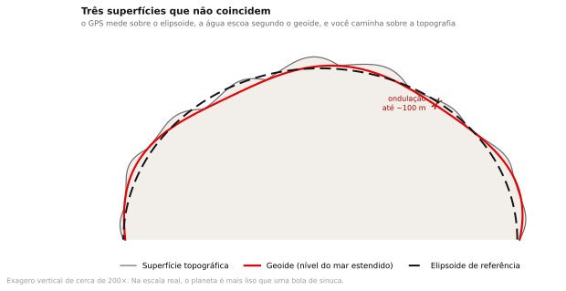
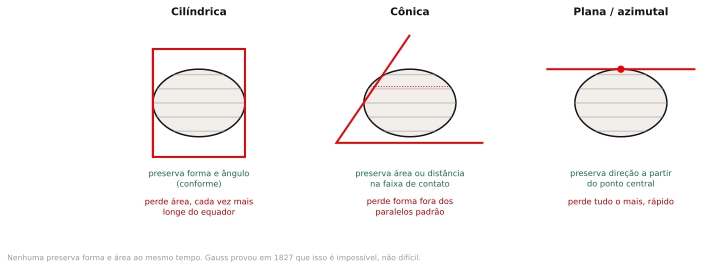
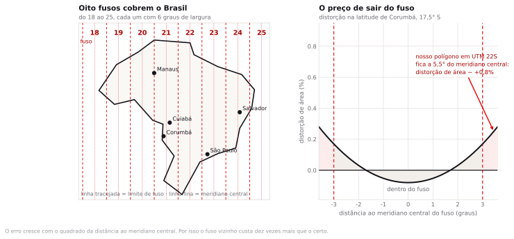
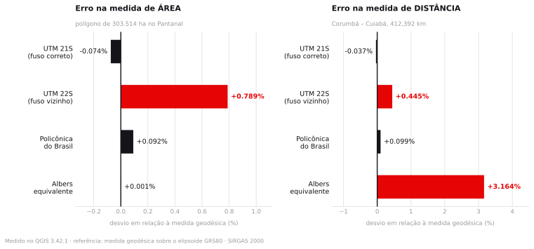

Preparação e dados
Você deveria ter lido o capítulo sobre projeções do How to Lie with Maps. Se não leu, leia as cinco primeiras páginas agora, enquanto a turma se organiza.
- cicatriz_teste_pantanal.gpkg 1 polígono, EPSG:4674. Área geodésica de 303.514,4555 ha. Todos os números do roteiro saem dele.didático
- area_queimada_pantanal_aq1km.gpkg 3.042 cicatrizes com id, ano, mês e área, do produto Área Queimada AQ1km v6 do INPE, meses de julho a novembro de 2020 e junho a novembro de 2024, recortados pelo bioma Pantanal. Soma de 7.255.548,0 ha somando mês a mês.oficial
- municipios_pantanal_2022.gpkg 18 municípios de MS e MT da malha municipal 2022 do IBGE, com código e área oficiais. Serve de recorte no exercício.oficial
- bioma_pantanal_2019.gpkg Contorno oficial do bioma Pantanal, 1 polígono, EPSG:4674. Recortado do arquivo de biomas 1:250.000 do IBGE, baixado em 02/08/2026. Área de 150.961,0 km² em Albers equivalente.oficial
- LEIA-ME.txt Descrição de cada arquivo, os números que produz e as fontes oficiais equivalentes.
dados/semana02/_numeros_oficiais.json. O cicatriz_teste_pantanal.gpkg é didático de propósito: existe para ter área geodésica conhecida, de 303.514,4555 ha.Os polígonos de área queimada vêm do produto Área Queimada AQ1km v6 do Programa Queimadas, do INPE, nos meses de julho a novembro de 2020 e junho a novembro de 2024, recortados pelo contorno oficial do bioma Pantanal. Cada feição é um agrupamento contíguo de pixels de 1 km queimados naquele mês, de modo que a soma mês a mês conta duas vezes a área que voltou a queimar. As malhas de município e de bioma vêm do portal de geociências do IBGE, convertidas de Shapefile para GeoPackage e para UTF-8. O arquivo cicatriz_teste_pantanal.gpkg é um polígono único, construído para esta aula, com área conhecida: os números do roteiro se referem a ele, e você deve reproduzi-los exatamente.
Um órgão ambiental divulga que 303 mil hectares queimaram no Pantanal. Um consultor contratado pela defesa refaz a conta e chega a 306 mil. Nenhum dos dois errou a soma. Quem está certo?
Geodésia e cartografia matemática
Descasque uma laranja inteira sem quebrar a casca e tente espalhá-la sobre a mesa até formar um retângulo. A casca rasga, ou estica, ou sobra em alguns lugares e falta em outros. Por mais cuidado que você tenha, não dá certo, e a razão é matemática, não manual.
Em 1827, Gauss demonstrou que nenhuma superfície curva pode ser aplanada sem deformação. O resultado ficou conhecido como Theorema Egregium, e é a razão pela qual toda projeção cartográfica é uma escolha sobre qual erro você prefere cometer. Como nenhum mapa plano consegue acertar tudo ao mesmo tempo, cada projeção é desenhada para preservar a propriedade que uma família de perguntas exige, ao custo das demais.
O problema é que o QGIS não avisa qual erro você está cometendo. Ele calcula e mostra um número com duas casas decimais, que parece confiável justamente por ter casas decimais. Boa parte desta aula consiste em descobrir de onde esse número saiu e em que condições ele merece confiança.
Geoide, elipsoide e datum
A Terra não é uma esfera. Ela gira, então achata nos polos e incha no equador: o raio equatorial tem cerca de 6.378 km e o polar, 6.357 km. Uma diferença de 21 quilômetros.
Mas ela também não é um elipsoide. A distribuição de massa no interior do planeta é irregular, então a superfície de nível do campo gravitacional, aquilo que chamaríamos de "nível do mar estendido por baixo dos continentes", tem ondulações de até cem metros para cima e para baixo. Essa superfície irregular é o geoide. É a forma física da Terra, e ela é impossível de descrever com uma equação simples.
Como ninguém consegue fazer conta sobre o geoide, adota-se um elipsoide de referência: um sólido matemático, definido por dois números, que se aproxima do geoide. E aqui está o detalhe que gera confusão: existem muitos elipsoides possíveis, e cada um se ajusta melhor a uma parte do planeta.

Datum geodésico
Um datum é o conjunto formado por um elipsoide de referência mais a maneira como ele foi amarrado ao planeta: qual ponto de origem, com que orientação, com que ajuste. Dois data diferentes atribuem coordenadas diferentes ao mesmo poste de luz. A diferença é sistemática, não aleatória, e no Brasil chega à ordem de dezenas de metros.
Se dois arquivos usam data diferentes, o erro que aparece ao sobrepô-los é aleatório ou tem direção definida?
Tem direção definida, e é isso que o torna perigoso. Um erro aleatório aparece como confusão visual e você percebe. Um deslocamento sistemático de sessenta metros para nordeste parece um alinhamento perfeito, só que errado. Você só descobre quando um lote inteiro cai do lado errado da divisa.
Por que o Brasil trocou de datum duas vezes
Até os anos 1980, boa parte da cartografia brasileira usava Córrego Alegre, um datum local com origem em um vértice em Minas Gerais. Depois veio o SAD69, o datum sul-americano, com origem no vértice Chuá, também em Minas. Ambos foram construídos com medições terrestres e são otimizados para o continente, não para o planeta.
Com o GPS, isso deixou de servir. Um receptor de satélite trabalha em um referencial geocêntrico, com origem no centro de massa da Terra, e data locais têm origem deslocada em relação a esse centro. O Brasil adotou então o SIRGAS 2000, geocêntrico e compatível com o WGS84 usado pelo GPS, que se tornou o sistema oficial em 2005 e obrigatório a partir de 2015.
Na prática, o que isso significa para você: uma camada antiga em SAD69 sobreposta a uma camada em SIRGAS 2000 aparece deslocada. O deslocamento varia com a posição, e no território brasileiro fica na casa de algumas dezenas de metros. Suficiente para mover uma divisa de lote, uma faixa de domínio de rodovia ou o limite de uma área de preservação permanente.
Muito arquivo antigo em portal público ainda está em SAD69, e nem sempre o metadado avisa. Se você sobrepuser duas camadas e elas parecerem "quase" alinhadas, com um deslocamento constante, suspeite de datum antes de suspeitar de erro de digitalização.
O que uma projeção preserva e o que ela sacrifica
Uma projeção é uma função matemática que leva um par latitude-longitude sobre o elipsoide para um par de coordenadas planas. Como a superfície é curva e o plano não é, alguma propriedade se perde. As candidatas a serem preservadas são quatro.
| Propriedade | O que fica correto | Quando você precisa |
|---|---|---|
| Conformidade | Os ângulos, e portanto a forma local das feições | Navegação, cadastro urbano, engenharia. UTM é conforme. |
| Equivalência | A área dos polígonos | Somar hectares, comparar territórios. Albers é equivalente. |
| Equidistância | A distância a partir de um ponto ou ao longo de uma linha | Análise de alcance a partir de uma origem única |
| Azimutalidade | A direção a partir de um ponto central | Radiocomunicação, rotas aéreas de longo curso |

A frase acima merece ser lida de novo, porque é o núcleo da aula: não existe projeção que preserve forma e área simultaneamente. Se alguém te oferecer uma, está errado ou está aproximando dentro de uma região pequena o bastante para a diferença não aparecer.
UTM e os oito fusos que cobrem o Brasil
O sistema Universal Transversa de Mercator resolve o problema da distorção por uma estratégia simples: não projetar o mundo inteiro de uma vez. O planeta é fatiado em 60 fusos de 6 graus de longitude cada, e cada fuso recebe a sua própria projeção, otimizada para aquela faixa. Dentro do fuso, a distorção fica pequena. Fora dele, cresce rápido.
Cada fuso tem um meridiano central, onde o fator de escala vale 0,9996, e o erro cresce à medida que você se afasta desse meridiano. Nas bordas do fuso, a 3 graus do centro, a escala já passou de 1. A conta é direta: a distorção de área é aproximadamente o quadrado do fator de escala.

O Brasil é atravessado por oito fusos, do 18 ao 25. Para descobrir o fuso de um ponto, existe uma fórmula:
fuso = parte inteira de ((longitude + 180) / 6) + 1
Corumbá, MS long. -57,653 → fuso 21
Cuiabá, MT long. -56,096 → fuso 21
Curitiba, PR long. -49,273 → fuso 22
São Paulo, SP long. -46,633 → fuso 23
Salvador, BA long. -38,501 → fuso 24
Mato Grosso, Pará e Bahia atravessam mais de um fuso
Se a sua área de estudo cabe em um fuso, use aquele fuso. Se ela cruza a fronteira entre dois, você não tem escolha boa em UTM: qualquer fuso que escolher vai distorcer metade do território. Nesse caso, mude de família de projeção: a cônica de Albers, apresentada na próxima seção, foi construída para esse cenário.
Você precisa somar a área desmatada em todos os municípios do Mato Grosso, que vai da longitude −61 à −50. Qual fuso UTM usar?
Nenhum. O estado cobre os fusos 20, 21 e 22. Escolher um deles introduz erro sistemático crescente nos municípios do outro extremo. A resposta correta é usar uma projeção equivalente de abrangência continental, e você vai ver o número exato desse erro no passo 7 do roteiro.
Albers, para quando o assunto é área
A cônica equivalente de Albers é uma projeção construída com um objetivo único: manter a área correta. Ela sacrifica a forma, que fica progressivamente esticada conforme você se afasta dos paralelos padrão, e em troca entrega áreas que somam certo em toda a extensão do território.
É a projeção que o IBGE usa quando publica totais de área para o Brasil, e é a que você deve usar sempre que a resposta da sua pergunta for um número em hectares ou quilômetros quadrados sobre uma região grande.
O preço aparece nas outras medidas. No passo 9 do roteiro você vai medir a mesma distância entre duas cidades em UTM e em Albers, e a diferença passa de treze quilômetros. É o comportamento esperado: pelo teorema de Gauss, a projeção que mantém a área correta precisa deformar alguma outra propriedade, e na Albers a deformação recai sobre forma e distância.
O código EPSG
Cada combinação de datum e projeção recebe um número em um catálogo mantido originalmente pelo European Petroleum Survey Group. É por isso que se fala em EPSG. O número é o identificador inequívoco: dizer "UTM 21 Sul" é ambíguo porque não informa o datum, mas dizer EPSG:31981 não deixa dúvida.
| Código | Nome | Use quando |
|---|---|---|
EPSG:4674 | SIRGAS 2000 geográfico | Padrão dos dados brasileiros. Coordenadas em graus. |
EPSG:4326 | WGS 84 geográfico | GPS, GeoJSON, APIs. Coordenadas em graus. |
EPSG:31978 a 31985 | SIRGAS 2000 / UTM fusos 18S a 25S | Análise local em metros. Escolha o fuso da sua área. |
EPSG:31983 | SIRGAS 2000 / UTM 23S | São Paulo e boa parte do Sudeste. Você usa no tema 5. |
EPSG:5880 | SIRGAS 2000 / Policônica do Brasil | Mapas do país inteiro. Não é equivalente nem conforme. |
ESRI:102033 | Albers equivalente da América do Sul | Somar áreas em escala regional ou nacional. |
Reprojeção na tela e reprojeção de verdade
Quando você carrega no mesmo projeto uma camada em EPSG:4674 e outra em EPSG:31981, o QGIS as desenha alinhadas. Isso é a reprojeção dinâmica, ou on the fly: o programa converte tudo para o CRS do projeto na hora de desenhar.
Ela resolve apenas o problema visual. Os arquivos continuam nos seus sistemas originais, e várias ferramentas de análise trabalham sobre o dado como ele está no disco, não como aparece na tela. Se a pergunta envolve medida, você precisa reprojetar de verdade: gerar um arquivo novo no sistema correto.
Dada uma tarefa analítica, a prova pode pedir que você escolha o sistema de coordenadas e justifique a escolha, ou que aponte e estime a ordem de grandeza do erro de uma medição de área feita no sistema errado.
Medindo a cicatriz de fogo no QGIS
Os números abaixo são exatos. Se o seu QGIS mostrar outra coisa, algum passo saiu diferente, e vale parar para descobrir qual antes de seguir.
Abrir o projeto e carregar as camadas
- Abra o QGIS e vá em Project ▸ Open. Navegue até
InfoGeo/tema02_projecoes/projeto.qgz, o que você salvou no tema anterior. - Se sobraram camadas da aula anterior, remova todas: clique com o botão direito em cada uma e escolha Remove Layer.
- Arraste
cicatriz_teste_pantanal.gpkgda sua pastadados_brutosdireto para dentro da janela do QGIS. Arrastar funciona e é mais rápido que o menu. - Arraste também
municipios_pantanal_2022.gpkgebioma_pantanal_2019.gpkg. - No painel Browser, em XYZ Tiles, dê duplo clique na conexão OpenStreetMap que você cadastrou no tema 1 e arraste a camada para o fundo da pilha. Se a conexão não aparecer, refaça o passo 5 do Encontro 1.
- Clique com o botão direito em
cicatriz_testee escolha Zoom to Layer.
Você deve estar olhando para um polígono único, com o formato aproximado de um hexágono irregular, na região de Corumbá, no Mato Grosso do Sul. O mapa base deve mostrar a planície pantaneira ao redor.
Descobrir em que sistema cada camada está
Antes de qualquer medida, sempre a mesma pergunta: em que sistema esse dado está?
- Clique com o botão direito em
cicatriz_teste, escolha Properties e abra a aba Information. - Localize o bloco Coordinate Reference System (CRS). Deve constar
EPSG:4674 - SIRGAS 2000, com unidades em graus. - Feche e repita para
municipios. Também está em EPSG:4674. - Olhe o canto inferior direito da janela do QGIS. O botão ali mostra o CRS do projeto, que é diferente do CRS de cada camada.
Cada camada tem o seu CRS, que é o sistema em que as coordenadas estão gravadas no arquivo. O projeto tem o seu, que é o sistema em que tudo é desenhado na tela. O QGIS converte de um para o outro ao desenhar. Confundir os dois é a origem de metade dos problemas de projeção que você vai encontrar.
A primeira medida, e o problema da unidade
Vamos calcular a área do polígono do jeito mais direto possível, e ver o que acontece.
- Selecione a camada
cicatriz_testeno painel Layers. - Abra a tabela de atributos com
F6. - Clique no ícone da calculadora de campo, ou use
Ctrl+I, para abrir o Field Calculator. - Marque Create a new field, dê o nome
area_v1, tipo Decimal number (real), com precisão 4. - No campo de expressão, escreva apenas:
$area
- Repare no painel Preview, na parte de baixo da janela. Ele já mostra o resultado.
- Clique OK, depois no botão de salvar edições e desligue o modo de edição.
O valor é 0,2582, e a unidade não é hectare nem metro quadrado: são graus quadrados. Grau quadrado não mede área nenhuma, porque um grau de longitude vale 111 km no equador e zero no polo. O número tem quatro casas decimais e nenhum significado físico.
Por que o QGIS calculou isso em vez de avisar que a operação não faz sentido?
Porque do ponto de vista do programa a operação faz sentido: ele recebeu um polígono com coordenadas numéricas e aplicou a fórmula da área de um polígono. O software não sabe que aqueles números são ângulos. Quem sabe é você.
Ligar o elipsoide e refazer a conta
Um projeto novo do QGIS nasce sem elipsoide definido, e foi por isso que a medida anterior saiu em graus quadrados. A configuração que corrige isso fica escondida nas propriedades do projeto, e quase nenhum curso a menciona.
- Vá em Project ▸ Properties ▸ General.
- Localize a seção Measurements.
- No campo Ellipsoid, você vai encontrar None / Planimetric. Troque para GRS 1980, que é o elipsoide do SIRGAS 2000.
- Logo abaixo, em Units for area measurement, escolha Hectares.
- Em Units for distance measurement, escolha Kilometers.
- Clique OK.
Agora repita o passo 3, criando um campo novo chamado area_v2 com a mesma expressão $area.
O valor deve ser 303.514,4555 hectares. Esse é o número de referência da aula. Ele foi calculado sobre a superfície do elipsoide, sem passar por nenhuma projeção, e é o mais próximo da verdade que dá para chegar.
A função $area tem duas personalidades
Com elipsoide definido, ela devolve a área geodésica, medida sobre a superfície curva, na unidade que você escolheu nas propriedades do projeto. Sem elipsoide definido, ela devolve a área plana calculada diretamente sobre as coordenadas da camada, seja lá qual for a unidade delas. A expressão muda de comportamento conforme essa configuração, e nada na tela indica qual dos dois está em uso.
As duas funções de área do QGIS
Existe uma segunda maneira de pedir área ao QGIS, e ela se comporta de outro jeito.
- Abra o Field Calculator de novo e crie o campo
area_v3, decimal com precisão 6. - Use a expressão:
area($geometry)
- Confirme e olhe a tabela lado a lado com
area_v2.
| Campo | Expressão | Valor | O que significa |
|---|---|---|---|
area_v2 | $area | 303.514,4555 | Área geodésica, em hectares |
area_v3 | area($geometry) | 0,258250 | Área plana, em graus quadrados |
$area respeita o elipsoide e as unidades do projeto. area($geometry) ignora as duas coisas e calcula sempre no plano, na unidade da camada. A segunda só é segura quando a camada já está em um sistema projetado em metros.
Reprojetar de verdade, para o fuso certo
Corumbá está na longitude −57,65, o que a coloca no fuso 21. O código correspondente em SIRGAS 2000 é EPSG:31981.
- Clique com o botão direito em
cicatriz_testee escolha Export ▸ Save Features As. - Preencha a janela conforme abaixo.
- Format
- GeoPackage
- File name
- dados_tratados/cicatriz_utm21.gpkg
- Layer name
- cicatriz_utm21
- CRS
- EPSG:31981 — SIRGAS 2000 / UTM zone 21S
- Encoding
- UTF-8
- Add saved file to map
- marcado
- Clique OK. A camada nova entra no projeto.
- Abra a tabela de atributos dela e crie um campo
area_utm21com a expressão:
area($geometry) / 10000 -- metros quadrados divididos por 10.000 = hectares
O valor deve ser 303.289,18 hectares. Agora area($geometry) é seguro, porque a camada está em metros. Compare com a referência geodésica: a diferença é de 225 hectares para menos, ou −0,074%. Esse é o preço de projetar, e é pequeno o bastante para quase toda aplicação.
O erro do fuso vizinho
Imagine que você recebeu esse arquivo de um colega que trabalha em Curitiba e deixou o projeto no fuso 22, que é o dele. Ou que você simplesmente escolheu errado na lista, porque 21 e 22 estão um do lado do outro no menu.
- Repita o passo 6, mas escolha
EPSG:31982 — SIRGAS 2000 / UTM zone 22S. - Salve como
cicatriz_utm22.gpkg. - Crie o campo
area_utm22com a mesma expressão de conversão para hectares.
São 305.908,87 hectares. A diferença para a referência é de +2.394 hectares, ou +0,789%. Em um único polígono, e sem que nada na tela indique que algo está errado. O mapa fica visualmente idêntico.
Dá para prever esse erro sem medir. O meridiano central do fuso 22 está na longitude −51, e o nosso polígono está em torno de −56,5, ou seja, a 5,5 graus de distância. Aplicando o fator de escala do UTM nessa distância, a distorção de área esperada fica em torno de 0,8%. A teoria previu a observação com uma casa decimal de acerto.
2.394 hectares equivalem a cerca de 3.400 campos de futebol. Em que situação concreta essa diferença muda uma decisão?
Em uma multa ambiental calculada por hectare, por exemplo, ou em um seguro rural com indenização proporcional à área atingida. E lembre da perícia: se a parte contrária tiver um assistente técnico competente, ele vai refazer a conta e encontrar a diferença.
Albers e a tabela final
- Repita o passo 6 mais duas vezes, agora com
EPSG:5880, a policônica do Brasil, e comESRI:102033, a Albers equivalente da América do Sul. - Para achar a Albers na janela de seleção de CRS, digite
102033na caixa Filter. - Calcule a área em hectares em cada uma e monte a tabela.
| Sistema | Área (ha) | Diferença (ha) | Desvio |
|---|---|---|---|
| Geodésica sobre GRS80 (referência) | 303.514,46 | — | — |
| ESRI:102033 · Albers equivalente | 303.517,67 | +3 | +0,001% |
| EPSG:31981 · UTM 21S (fuso correto) | 303.289,18 | −225 | −0,074% |
| EPSG:5880 · Policônica do Brasil | 303.794,24 | +280 | +0,092% |
| EPSG:31982 · UTM 22S (fuso vizinho) | 305.908,87 | +2.394 | +0,789% |
A Albers acerta a área na terceira casa decimal, porque foi construída para isso. O fuso UTM correto erra 0,07%, o que é aceitável na maioria das aplicações. O fuso errado erra dez vezes mais. Nenhum desses erros aparece na tela.
A mesma comparação, agora com distância
Se a Albers é tão boa, por que não usar sempre? Vamos medir a distância entre Corumbá e Cuiabá em cada sistema e ver.
- Crie uma camada temporária de linha ligando as duas cidades, ou use a ferramenta de medição em cada projeto reprojetado.
- O caminho mais rápido: Project ▸ Properties ▸ General, confirme que o elipsoide está em GRS 1980, e use View ▸ Measure ▸ Measure Line. Com o elipsoide ligado, a régua devolve a distância geodésica.
- Para as outras medidas, mude o CRS do projeto no canto inferior direito e desligue o elipsoide, deixando None / Planimetric. Aí a régua mede no plano da projeção.
| Sistema | Distância (km) | Desvio |
|---|---|---|
| Geodésica sobre GRS80 (referência) | 412,392 | — |
| EPSG:31981 · UTM 21S | 412,239 | −0,037% |
| EPSG:5880 · Policônica do Brasil | 412,799 | +0,099% |
| EPSG:31982 · UTM 22S | 414,225 | +0,445% |
| ESRI:102033 · Albers equivalente | 425,440 | +3,164% |

A projeção não se escolhe pelo território. Escolhe-se pela pergunta.
Se você vai somar hectares em escala nacional, use Albers e aceite que as distâncias ficarão erradas em alguns por cento. Se vai medir distância, área e forma dentro de uma região que cabe em um fuso, use o UTM daquele fuso. Se a região atravessa fusos e a pergunta é de área, volte para Albers. E em qualquer caso, deixe registrado no relatório qual sistema você usou, porque sem essa informação o número não é auditável.
Exercício
Abra a camada area_queimada_pantanal_aq1km.gpkg, que traz 3.042 cicatrizes de fogo espalhadas pela planície, somando 7.255.548 hectares mês a mês.
- Escolha um município e recorte os polígonos de fogo que caem dentro dele. Os três que concentram mais área queimada no pacote são Corumbá, com 2,73 milhões de hectares, Poconé, com 1,12 milhão, e Barão de Melgaço, com 1,09 milhão. Use Vector ▸ Geoprocessing Tools ▸ Clip.
- Calcule a área total queimada nesse município em UTM 21S e em Albers.
- Registre a diferença em hectares e em porcentagem.
Depois responda, em duas frases:
- Qual dos dois números você colocaria em um laudo pericial sobre esse município, e por quê?
- E se o pedido fosse o total queimado no Pantanal inteiro, que atravessa dois fusos? A sua resposta muda?
Em Corumbá, o recorte dá 2.733.858,78 ha em Albers e 2.731.959,23 ha em UTM 21S, uma diferença de 1.899,55 ha, ou −0,07%. Em Poconé, 1.115.154,82 contra 1.114.278,77, ou −0,08%. O desvio percentual é o mesmo do polígono de teste do passo 6, porque depende da distância ao meridiano central e não do tamanho da área. Quem repetir a conta em UTM 22S encontra +0,98% em Corumbá, isto é, 26.905,76 hectares a mais. Vale notar que a soma sobre os quinze municípios tocados dá 7.228.176 ha, e não os 7.255.548 do arquivo: os 27.372 hectares que faltam queimaram na faixa do bioma que fica fora da malha municipal brasileira, junto à fronteira com a Bolívia e o Paraguai.
Fechamento
Queimaram 303.514 hectares. Os dois lados da disputa estavam certos na aritmética e o consultor da defesa usou o fuso errado.
O número que você defende depende de uma escolha declarada, não descoberta. Medida de área sem indicação do sistema de coordenadas é um número sem procedência, do mesmo jeito que um valor monetário sem indicação de moeda. A partir de hoje, todo resultado seu carrega o CRS junto.
O que discutir com a turma
Três perguntas para os últimos minutos, com a resposta em aberto.
Se a diferença entre projeções é de menos de 1%, ela importa mesmo?
Depende inteiramente de onde o número entra. Em um mapa de comunicação, 0,8% é invisível. Em uma multa de R$ 5 mil por hectare, são R$ 12 milhões. O erro é o mesmo nos dois casos; o que muda é o tamanho da consequência.
O QGIS deveria avisar quando você mede área em uma camada em graus?
Vale discutir o desenho da ferramenta. Softwares que impedem o erro protegem o iniciante e atrapalham quem sabe o que está fazendo. A posição contrária é que um número sem unidade coerente nunca deveria ser produzido em silêncio.
Quem é responsável quando um laudo usa a projeção errada: o perito, o software ou quem forneceu o dado?
- Você mediu a área do polígono que recebeu, e não discutiu como esse polígono foi delimitado. A cicatriz de fogo tem borda difusa, e a decisão de onde traçar o limite embute um erro que pode ser maior que o de projeção. Isso volta no tema 9, com a matriz de confusão.
- Os dados do INPE detectam fogo por satélite, com passagem em horário fixo. Um incêndio que começa e termina entre duas passagens pode não aparecer.
- Os 7.255.548 hectares do arquivo AQ1km são a soma de onze meses, e uma área que queimou em agosto e voltou a queimar em setembro entra duas vezes. Para saber quanto do Pantanal queimou ao menos uma vez seria preciso dissolver os polígonos por ano antes de somar, o que é operação do tema 5.
- A escolha entre Albers e UTM foi feita para uma região específica. Em latitudes muito altas ou em áreas que cruzam o equador, a análise precisa ser refeita.
- Nada aqui trata de altitude. Área medida sobre a projeção é área plana, e uma encosta de 30 graus tem mais superfície real do que a sua sombra no mapa.